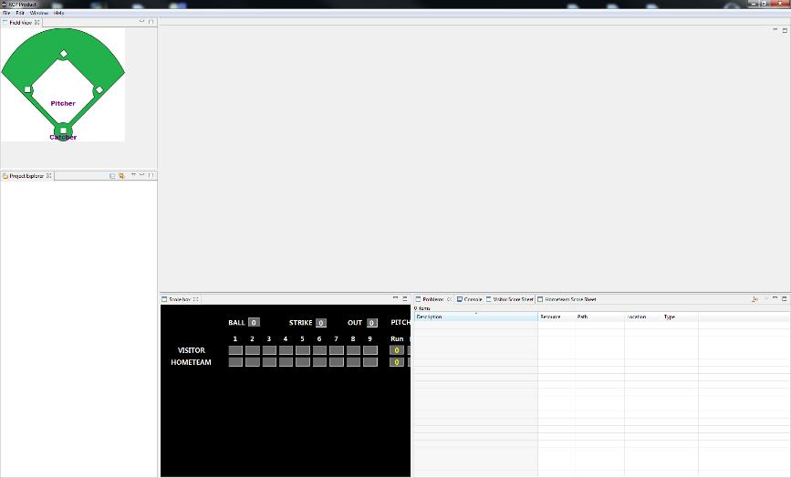

C’est en faisant ce constat que je décidé de développer un logiciel de saisie des feuilles de scorage dans une technologie plus moderne. Ce projet permet de respecter intégralement les règles définies dans le document ‘Scorer Manual 2016’, mais de plus il permet d’imprimer les feuilles de scorages en respectant le format utilisé en europe. Il permet aussi une prise en main plus intuitive que le logiciel officiel car il est basé sur une interface graphique classique couramment utilisée sous windows.
Environnement.
Cette application est basée sur la technologie Eclipse RCP. Pour les non-initiés, Eclipse RCP est un framework orienté développement d'applications 'client riche' , c'est-à-dire qu’il fournit au développeur une base permettant de développer des applications basées sur des fenêtres, menus et dont l’interaction se fait par le clavier et la souris. L’application se presente donc sous cette forme.

L’application peut être décomposée en plusieurs zones distinctes comme :
Une partie éditeur qui permet la saisie des matches ou la description des équipes.
Différentes vues permettant d’afficher des informations générales
D’une zone projet qui permet d’architecturer les fichiers saisis en fonction des compétitions et catégories de joueurs.
D’une zone de menu permettant le contrôle de l’application.
Une aide intégrée à l’outil